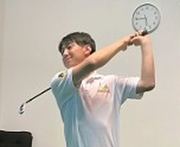
PGA ティーチングプロ A級
北澤 利毅きたざわ りき
身体的特徴を生かしたスイング作りを伝授します。
Why All Time Golf
オルタイムゴルフが契約するのは、PGA（日本プロゴルフ協会）のティーチングプロ、または同資格の取得を目指すコーチだけ。店舗と同じ基準の指導を、オンラインでもお届けします。
日本で最も影響力のあるゴルフ団体・PGAの基準で教えるコーチだけが担当します。愛知県初の取り組みです。
グループレッスンではなく1対1。担当プロがあなたのスイングと目標に合わせて毎月のドリルを選び、ドリルを中心にスイングを作っていきます。動画の添削とオンライン面談で、ドリルの成果を一緒に確かめます。
名古屋市港区のインドアゴルフスクール「オルタイムゴルフ」で指導しているプロが、オンラインでもあなたを担当します。
Online Lesson
レッスンのやり取りは、すべてスマートフォンで。通う時間や予約の手間をかけずに、PGAプロの指導を受けられます。
練習場や自宅でスイングを撮影して、会員ページから送るだけ。撮影機能付きなので、スマホひとつで始められます。
移動も予約もいりません。仕事や家事の合間など、空いた時間で自分のペースでレッスンを受けられます。
毎月のドリルとプロの解説は会員ページに残ります。練習の前に、いつでも、何度でも確認できます。
送った動画とレッスンが順番に並ぶので、以前の自分と比べて成長を実感できます。スコアの記録も付けられます。
Lesson Flow
毎月のドリルを中心に、この流れをくり返しながらスイングを作っていきます。
あなたのスイングと目標に合わせて、担当プロがその月に取り組むドリルを選び、会員ページに公開します。
ドリルの動画を見ながら練習。練習した日はアプリで記録でき、その記録はプロにも届きます。
ドリルに取り組んだスイングを撮って送信。気になっていることやお悩みも、文章でお送りください。
動画を添削して解説をお届け。オンライン面談で成果をふり返り、次のドリルにつなげます。
Member's Page
スマートフォンでいつでも確認。送った動画、コーチの解説、練習メニューまで、すべてここにまとまります。
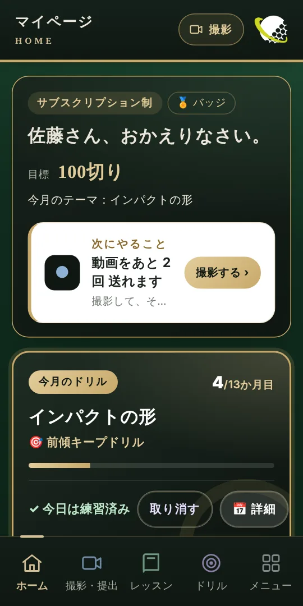
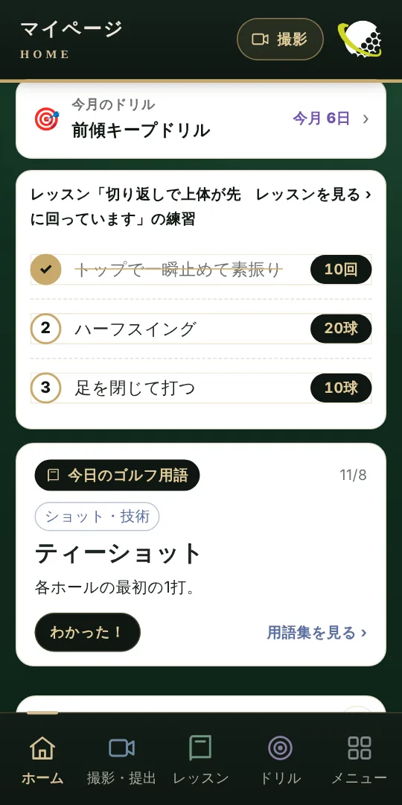
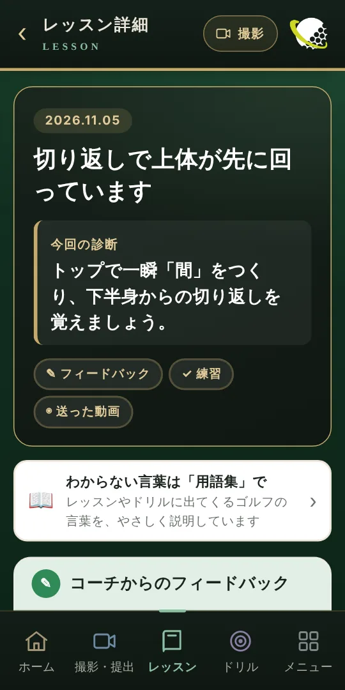
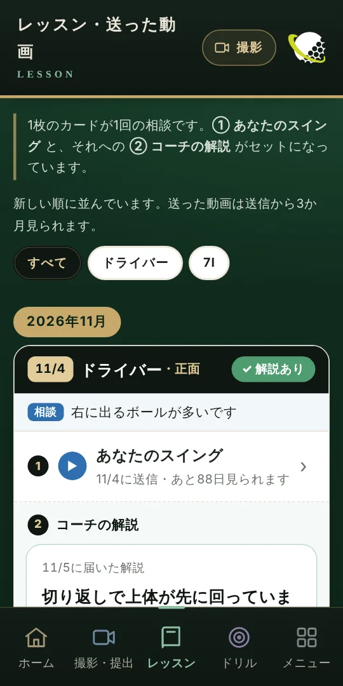
※ 画面はイメージです。
App Features
レッスンを受けるだけでなく、毎日の練習が続くしくみをアプリにそろえました。
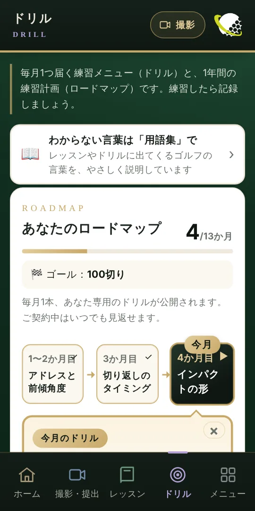
担当プロが選ぶ 毎月のドリル
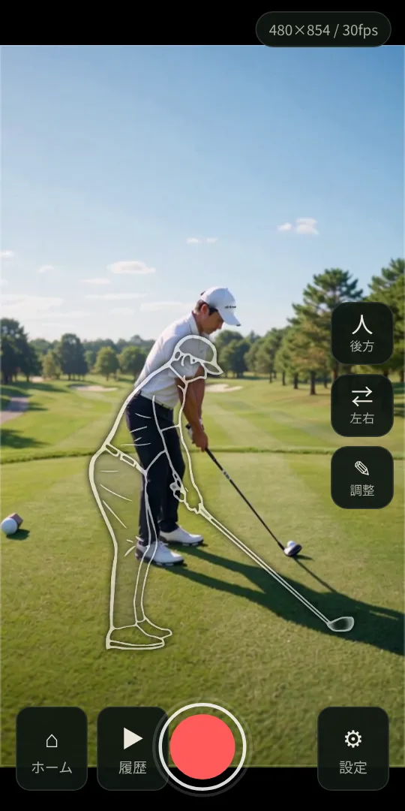
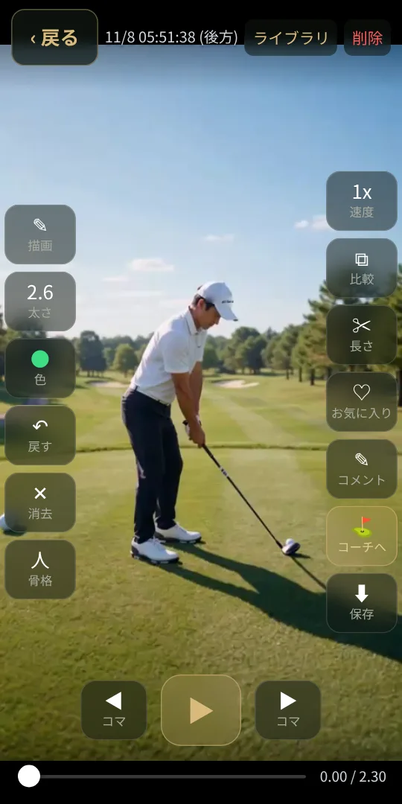
撮影機能 SwingFrame
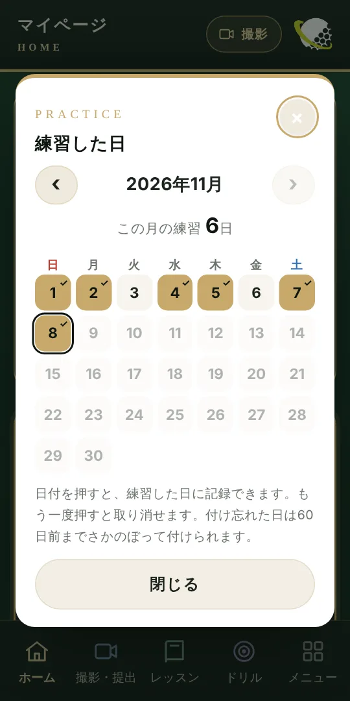
練習の記録
プロとビデオ通話で直接相談。日程はLINEで予約できます（プランにより回数が異なります）。
レッスンに出てくるゴルフの言葉を、やさしく解説。ルールやマナー、安全のことも調べられます。
練習で気づいたことを書いておけます。ホームにいちばん新しいメモが表示されます。
ラウンドのスコアを記録すると、ベストスコアと平均スコアを自動で計算します。
※ 画面はイメージです。内容はプランによって異なる場合があります。
Our School
All Time Golf は、名古屋市港区のインドアゴルフスクール「オルタイムゴルフ」のオンラインレッスンです。店舗で指導しているプロが、オンラインでもあなたのスイングを見ます。
店舗のホームページを見る ↗Plan
レベルや目標に合わせて、2つのプランからお選びいただけます。
担当のPGAプロがあなたに合わせて選ぶ「毎月のドリル」が中心。動画の添削と月1回の面談で、ドリルの成果を確かめながらスイングを作ります。
カリキュラムを順番に進める通信教育型。月ごとの課題をクリアしながら、12か月で体系的に上達します。
※ 料金・内容は変更になる場合があります。進捗に応じて、運営からフォローのメッセージをお送りする場合があります。
Coach
PGA（日本プロゴルフ協会）は、日本で最も大きな影響力をもつゴルフ団体です。
オルタイムゴルフは、PGAティーチングプロ、または同資格の取得を目指すコーチのみと契約しています。

PGA ティーチングプロ A級
北澤 利毅きたざわ りき
身体的特徴を生かしたスイング作りを伝授します。
PGA ティーチングプロ（A級取得中）
林 大貴はやし だいき
ミート率UPの方法を伝授します。
PGA ティーチングプロ（A級取得中）
後藤 輝ごとう ひかる
最適なフェースコントロールを実現するスイングを伝授します。
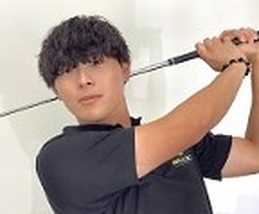
PGA ティーチングプロ（A級取得中）
成田 風里なるた かざり
筋力を効率よくスイングに反映させる方法を伝授します。
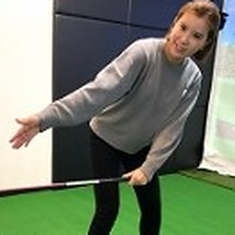
PGA ティーチングプロ取得中（USGTF ティーチングプロ）
名和 里依なわ さとえ
女性視点で、美スイングの作り方を伝授します。
FAQ
はい。初心者〜初級者の方には、カリキュラムを順番に進める「ユーキャン制」がおすすめです。
基礎から体系的に学びたい初心者〜初級者の方は「ユーキャン制」、担当プロが選ぶ毎月のドリルと面談で、継続的にスイングを作りたい中級〜上級者の方は「サブスクリプション制」がおすすめです。迷ったらお気軽にご相談ください。
上達のための練習メニュー（動画つき）です。サブスクリプション制では、担当のPGAプロがあなたのスイングと目標に合わせて毎月のドリルを選びます。ドリルで練習し、その成果を動画の添削や面談でプロが確かめながら、スイングを作っていきます。
スマートフォンがあれば大丈夫です。撮影の条件（方向・距離など）は課題ごとにご案内します。
オンラインで行います。ドリルを画面で共有しながら、PGAプロが解説します（サブスクリプション制は月1回25分、ユーキャン制は年4回程度）。
最低4か月のご契約をお願いしています。
はい。LINE またはお電話（11:00〜20:00）で、お気軽にご相談ください。
Contact
ご不明な点やプランのご相談も、お気軽にお問い合わせください。